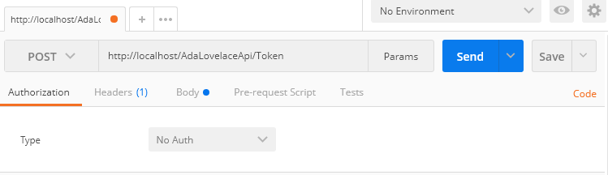
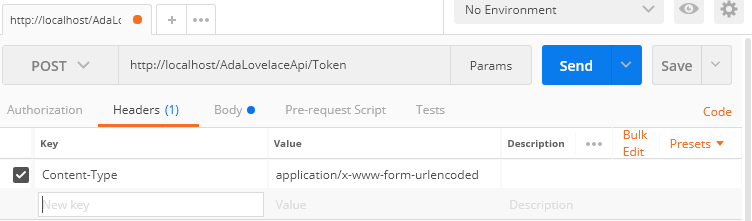
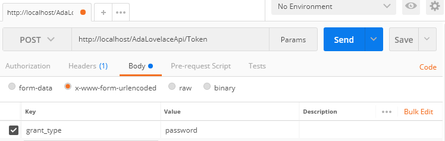
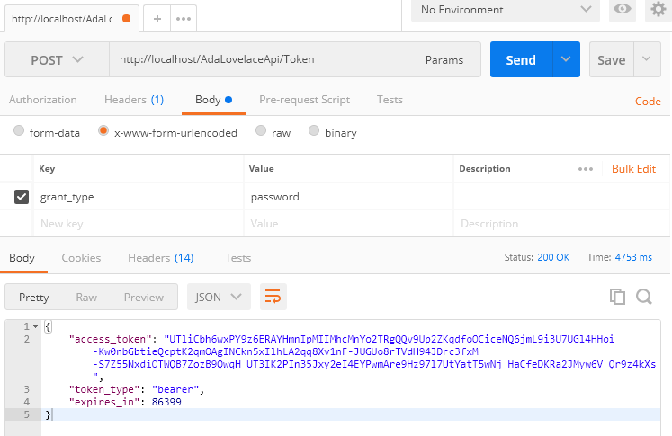

This article explains the steps to apply security on web API systems in C#. We use Token based authentication and windows authentication for login. So, we use Microsoft Owin library.
The client (web application on browser) request to server a security token according to the session and the logged user (in this tutorial, the windows user). We have to send the token on each API request header. Each API method has an authorization configuration. This method executes and returns correctly only if the token user has all necessary accesses. If the user does not have access or the token is not in request header, the request returns an anthentication error.
First, we import the necessary packages to the project: Microsoft.Owin.Security.OAuth and Microsoft.Owin.Host.SystemWeb.
In Visual Studio, right click on project, go to "Manage NuGet packages", type "Microsoft.Owin.Security.OAuth" in field search, select the last version and install. Do the same to Microsoft.Owin.Host.SystemWeb.
- YourAPIProject
--- App_Start
------ Startup.Auth.cs: Token generation configurations
--- Providers
------ ActiveDirectoryOAuthProvider.cs: defines business rules for authentication
------ RestrictionsRules.cs: defines customized access rules for user profiles
--- Global.asax: enables CORs and authentication headers
--- Startup.cs: calls Startup.Auth.cs
--- Web.config: windows authentication configuration
The following code shows the implementation of Startup.cs class:
using Microsoft.Owin; using Owin; [assembly: OwinStartup(typeof(Adadev.Security.Startup))] namespace Adadev.Security { public partial class Startup { public void Configuration(IAppBuilder app) { ConfigureAuth(app); } } }
The following code shows the implementation of Startup.Auth.cs class. The configuration "TokenEndpointPath" is the path to the token request. "AccessTokenExpireTimeSpan"is the token expiration time.
using Microsoft.Owin; using Microsoft.Owin.Security.OAuth; using Owin; using System; using Adadev.Security.Providers; namespace Adadev.Security { public partial class Startup { public void ConfigureAuth(IAppBuilder app) { string user = System.Web.HttpContext.Current.User?.Identity?.Name; // To use the "Authorization" Header on requests app.UseOAuthBearerAuthentication(new OAuthBearerAuthenticationOptions()); // Active the method to generate the OAuth Token app.UseOAuthAuthorizationServer(new OAuthAuthorizationServerOptions() { TokenEndpointPath = new PathString("/Token"), Provider = new ActiveDirectoryOAuthProvider(), AccessTokenExpireTimeSpan = TimeSpan.FromDays(1), AllowInsecureHttp = true }); } } }
To avoid problems with cross-origin requests (from differents servers) and problems with authorization headers, we have to enable CORs and others header permissions, inclusive the Authorization header used to send the access token. We write it in Global.asax.
using System; using System.Web.Http; namespace Adadev.Security { public class MvcApplication : System.Web.HttpApplication { protected void Application_Start() { GlobalConfiguration.Configure(WebApiConfig.Register); } protected void Application_BeginRequest(object sender, EventArgs e) { var origin = Context.Request.Headers["Origin"]; if (string.IsNullOrWhiteSpace(origin)) origin = "*"; Context.Response.AddHeader("Access-Control-Allow-Origin", origin); Context.Response.AddHeader("Access-Control-Allow-Credentials", "true"); Context.Response.AddHeader("Access-Control-Allow-Methods", "GET,HEAD,OPTIONS,POST,PUT,DELETE"); Context.Response.AddHeader("Access-Control-Allow-Headers", "Access-Control-Allow-Headers, Origin, Accept, X-Requested-With, Content-Type, Access-Control-Request-Method, Access-Control-Request-Headers, Access-Control-Allow-Credentials, Authorization"); if (Context.Request.HttpMethod != "OPTIONS") return; Context.Response.End(); } } }
We define the authentication rules in ActiveDirectoryOAuthProvider.cs class, that is, it is responsible for checking the user, password and if the user has access to the system. On the following example, we only check if the windows user is logged. You can insert your own rule in the method isUserAuthenticated, for example, checking if the user has some permission persisted on database.
using Microsoft.Owin.Security.OAuth; using System.Security.Claims; using System.Threading.Tasks; namespace Adadev.Security.Providers { public class ActiveDirectoryOAuthProvider : OAuthAuthorizationServerProvider { public override Task ValidateClientAuthentication(OAuthValidateClientAuthenticationContext c) { c.Validated(); return Task.FromResult<object>(null); } public override Task GrantResourceOwnerCredentials(OAuthGrantResourceOwnerCredentialsContext c) { if(isUserAuthenticated()) { Claim claim1 = new Claim(ClaimTypes.Name, System.Web.HttpContext.Current.User.Identity.Name); Claim[] claims = new Claim[] { claim1 }; ClaimsIdentity claimsIdentity = new ClaimsIdentity(claims, OAuthDefaults.AuthenticationType); c.Validated(claimsIdentity); } return Task.FromResult<object>(null); } public static bool isUserAuthenticated() { if(System.Web.HttpContext.Current.User != null) { bool isAuthenticated = System.Web.HttpContext.Current.User.Identity.IsAuthenticated; string userName = System.Web.HttpContext.Current.User.Identity.Name; // use your business rule here (consulting database, etc) if(isAuthenticated){ return true; } } return false; } } }
In general, the access control is done by using the [Authorize] atribute above the API method defining the Windows configured roles and users. In the below example, only the users user1 e user2 have access to the method GetInfo:
[Authorize(Users = @"domain\user1, domain\user2 ")] [HttpGet] public HttpResponseMessage GetInfo() { return Request.CreateResponse(HttpStatusCode.OK, new { Content = $"Logged user: " + User?.Identity?.Name }); }
In this article, we show how to customize this access control, anyway you prefer, like in the case we control using database rules (user, profile, accesses selected in tables). The code below is in the class RestrictionsRules.cs. The customization Basic only verify if the user is authenticated (this verification is implemented in the class ActiveDirectoryOAuthProvider):
using System.Web.Http; using System.Web.Http.Controllers; using System; namespace Adadev.Security.Providers { public class Basic : AuthorizeAttribute { protected override bool IsAuthorized(HttpActionContext actionContext) { return ActiveDirectoryOAuthProvider.isUserAuthenticated(); } } }
The customization is used in the API method as follows:
[Basic] [HttpGet] public HttpResponseMessage GetInfo() { return Request.CreateResponse(HttpStatusCode.OK, new { Content = $"Logged user: " + User?.Identity?.Name }); }
What if I want to authorize each API method according with the pre-configured accesses? We write the access codes in an Enum and write one more class in RestrictionsRules.cs:
using System.Web.Http; using System.Web.Http.Controllers; using System.Linq; using System; namespace Adadev.Security.Providers { public class CustomAuthorize : AuthorizeAttribute { private string[] accesses; public CustomAuthorize(params object[] accessRequired) { if(!(accessRequired.Any(p => p.GetType().BaseType != typeof(Enum)))) {// Enum withe the accesses codes // required accesses list for some method (the list we added in API method signature) this.accesses = accessRequired.Select(a => Enum.GetName(a.GetType(), a)).ToArray(); } } protected override bool IsAuthorized(HttpActionContext actionContext) { if(this.accesses != null && this.accesses.Count() > 0) { foreach(string accessCode in this.accesses) { // your implementation to verify if the user has access to this part of the system bool isAuthorized = ActiveDirectoryOAuthProvider.UserHasAccess(accessCode); if(isAuthorized) { return true; } } } return false; } } public class Basic : AuthorizeAttribute { protected override bool IsAuthorized(HttpActionContext actionContext) { return ActiveDirectoryOAuthProvider.isUserAuthenticated(); } } }
Considering AccessCode the enum with the access codes, we use the customized authorizarion in the API method as follows:
[CustomAuthorize(AccessCode.editUser_Modify, AccessCode.editProfile_Get)]
[HttpPost]
public HttpResponseMessage SaveUser(UserRequest user) {
...
}
The parameter accessRequired in class constructor of CustomAuthorize has the access codes list passed as parameter in the configuration of the API method. This list is used in the method IsAuthorized.
To enable the Windows authentication, in the project properties (in Visual Studio, select the project and type F4):
- Enable Windows authentication
- Disable Anonymous authentication
In Web.config add authentication mode="Windows" to system.web:
<system.web>
...
<authentication mode="Windows" />
</system.web>
To publish the application in IIS, we also need to enable the Windows authentication. First, check if the resource is enabled:
- Access control panel;
- Programs and Features;
- Turn Windows features on or off;
- In the dialog box:
-- In Internet Information Services / World Wide Web Services / Security;
-- Select Windows Authentication.
In IIS:
- Select the API (ATENTION: do not select the web app);
- In "Home" panel, go to authentication:
-- Disable Anonymous Authentication;
-- Enable Windows Authentication.
To test the authentication, we can use the Postman, setting the properties, see images below:
  Returned token:
To request the security token in JavaScript, we have to send the follow ajax request:
this.getAuthorizeToken = function () { $.ajax({ "async": false, "crossDomain": true, "url": "http://localhost/AdaLovelaceApi/Token", "method": "POST", "headers": { "content-type": "application/x-www-form-urlencoded" }, "xhrFields": { "withCredentials": true }, "data": { "grant_type": "password" } }).done(function (data, textStatus, jqXHR) { sessionStorage.setItem("authToken", data.token_type + " " + data.access_token); }).fail(function (qXHR, textStatus, errorThrown) { console.log("error", "User not authorized"); }); }
The URL is the server address and the configured address in the class Startup.Auth.cs: "/Token". As response, the server will send an object with two attributes. We have to concatenate them: token_type e access_token. This token can be saved as an global variable. In this example, we saved the token in the browser variable sessionStorage.
When you call the API methods, you have to pass the token in the header of the request as Authorization:
$.ajax({
url: ajaxUrl,
type: ajaxType,
.
.
.
headers: {
"Authorization": sessionStorage.getItem("authToken")
}
});